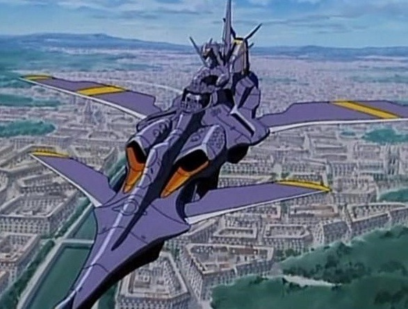

Voici la suite de l’article sur Nadia and The secret of Blue Water. Cet article se terminera dans un prochain numéro avec une historique de l’Atlantide.

Les autres machines
Dans Nadia et Jules VERNE, les véhicules sont légion, de tout type et catégorie. On passe du monocycle au gros vaisseau de type soucoupe volante Noah Pourpre.
Dans cette série apparaissent des véhicules roulant ou volant, dont les inventions de Jean Rock de BALTIQUE.
En premier lieu, nous trouvons au début de cette série l’Etoile de Seine n°7, le premier engin plus lourd que l’air. Cet aéroplane se rapproche dans sa conception, lamelles de bois et toile collée, du planeur d’Otto Lillihenthal.
En second lieu, nous voyons l’Etoile de la Seine n°8. Cet engin est de conception très moderne du fait qu’il possède une géométrie inversée à la Santos DUMONT, mais c’est un monoplan faiblement instrumenté. Celui-ci deviendra un hydravion à flotteur, amélioré par le personnel du Nautilus après leur amerrissage fou en Atlantique. Il fut détruit par manque de carburant.
Le troisième engin volant construit par Jean est un hélicoptère ou autogire sans rotor anti-couple. Cet hélicoptère rappelle le véhicule du livre de Jules VERNE Robur le conquérant, le maître du monde puisque l’engin possède des hélices verticales et horizontales.
Dans Nadia, Jean inventait divers autres engins, dont une catapulte, dans le grenier pour lancer l’Etoile de Série n°8, et un escalier mécanique. Mais son génie inventif explosa à bord du Nautilus où il inventa un missile atmosphérique très proche des fusées du type A4 / V2 de la seconde guerre mondiale célèbres par les bombardement sur Londres. L’autre véhicule est un hydroglisseur à jet d’eau nommé l’Emeraude.
Au delà des inventions de Jean, les auteurs ont créé un véhicule multifonctions: le Glatank, ou la Catherine. Cet engin polyvalent est successivement un véhicule tout terrain à six roues gonflables, un engin amphibie, un bathyscaphe en utilisant ses bras télescopiques (mini sous-marin) et surtout une montgolfière ayant fait la moitié du tour de la terre, comme dans Cinq semaines en ballon. Ils ont également créé un canon rotatif de type Gatling à canons multiples. Cet engin multifonctions a subit beaucoup de modifications et améliorations successives au cours de la série. Conçu par Titus (Hanson) il regroupe les capacités d’un bathyscaphe, d’un ballon atmosphérique comme le ballon de Bertrand PICARD, d’un blindé à roue et d’un robot géant apparu dans Appleseed de Masamune SHIROW.
Un autre aspect de la série est que nous trouvons des bateaux de l’US Navy ayant un peu plus de trente ans d’avance sur l’époque décrite par Jules VERNE dans 20.000 lieux sous les mers. Les bateaux décrits par Jules VERNE sont des voiliers blindés. Leur dessin est proche des vaisseaux datant de la fin de la Guerre de Sécession. Tandis que les bateaux montrés dans Nadia sont des croiseurs cuirassés de type Dreadnought. Ces bateaux sont des croiseurs de l’Escadre Blanche qui cinglaient sur les mers pour montrer la puissance de la marine américaine en appliquant la doctrine de Monroe.
A l’opposé, les forces de la Nouvelle Atlantide possèdent au delà de leurs forces sous-marines, des vaisseaux en étoile à trois branches contrôlés par lévitation magnétique MHD (magnético-hydrodynamique) équipés d’une Tour de Babel, arme laser à faisceau dirigé (voir prochain chapitre sur l’Atlantide), en liaison avec un réseau satellitaire. Aussi ce vaisseau rappelle l’Albatros de Robur le Conquérant qui bombardait à la fois les villes et les bateaux, comme l’a subi également le Nautilus dans la série.
L’autre arme super puissante de l’organisation est la Noah, un engin de type soucoupe volante, décrite dans La guerre des mondes d’Herbert Georges WELLS, contemporain de Jules VERNE et père de la machine à remonter le temps. Cette soucoupe volante ressemble aux engins apparus dans le film Le jour où la terre s’arrêta et la série Les envahisseurs. Elle fut construite en trois exemplaires: la Noa Bleue, blanche et rouge, qui sauvèrent les habitants de la cité Atlantis durant sa destruction.
En dehors de ces gros moyens, les forces de la Nouvelle Atlantide ont construit sur l’île de Maré, près du Cap Vert, leur base à l’intérieur d’un volcan. Cette île possède un tunnel d’accès au sous-marin, une centrale électrique avec des turbines. Elle est hyper mécanisée et bâtie pour créer le Plutargon, un catalyseur radioactif d’énergie pour un rayon laser de la Tour de Babel.
Les autres moyens de pression de la Nouvelle Atlantide sont divers robots:
- des robots-crabes de combat comparables au crabe géant de l’Ile mystérieuse.
- des robots à vapeur de grande taille pour protéger l’île de toute incursion étrangère. Ceux-ci possèdent des armes de courte et de longue portée, de style fusil et revolver, pour contraindre les esclaves de l’île.
Nautilus II ou Neo Nautilus
Après la destruction du premier Nautilus dans la fosse abyssale de l’Atlantique Sud par la marine américaine et ses ennemis de la nouvelle Atlantide, le Nautilus II ou Neo Nautilus apparaît vers la fin de la série, dans les 4 à 6 derniers épisodes.
Ce vaisseau de grande taille ressemble beaucoup par son allure générale à l’Arcadia / Atlantis du Capitaine Harlock de Leiji MATSUMOTO. Il fait approximativement entre 300 et 400 mètres de long, l’Arcadia / Atlantis en faisant exactement 400 mètres. Cependant, il existe quelques différences au niveau de son équipement:
- deux tourelles à deux canons contrairement à l’Arcadia qui a 2 tourelles jumelées de 3 canons plus une tourelle ventrale.
- un bouclier furtif, comme dans Star Trek avec les vaisseaux Klingon, alors que l’Atlantis n’en a pas.
- un champ de protection nommé Rideau de fer, pour contrer les attaques adverses, l’Atlantis n’en possédant pas à l’origine.
- sa propulsion est un moteur ionique ou nucléaire. Il peut se déplacer à la vitesse de la lumière.
Il peut s’immerger à des fortes profondeurs. Cette capacité a provoqué son sabordage par grands fonds à la fin de la série pour éviter toute utilisation ultérieure.
Le Nautilus II / Neo Nautilus est un navire faisant référence à la série Space Cruiser Yamato de MATSUMOTO. Concernant la renaissance du Yamato, ce bateau immergé depuis la seconde guerre mondiale, est renfloué, modernisé en croiseur spatial ultra sophistiqué pour combattre les agresseurs de la terre. Le Nautilus II, comme le Yamato, est enfermé dans une gangue de corrosion qui disparaîtra à l’activation de sa propulsion. Il apparaît alors dans toute sa splendeur métallique. Toute cette action se passe dans les couloirs de transfert des anciennes bases Atlantes.
Dans les différentes méthodes d’engagement du Nautilus II contre la Noa Pourpre, le capitaine NEMO et son équipage utilisent tous ces moyens offensifs et défensifs. Au début des combats sur Paris, NEMO engage le Nautilus II dans des formes classiques de combat: utilisation des batteries à particules et de son bouclier dit Rideau de Fer contre l’énorme vaisseau de la Noa Pourpre. Ces procédures d’engagement sont apparues dans l’histoire de l’animation avec Space Cruiser Yamato. Cette série fut innovatrice dans les scénarios de guerre spatiale et ce style d’engagements a été repris par Leiji MATSUMOTO au cours de ces vingt dernières années. Ces attaques massives contre un ennemi supérieur en nombre furent également reprises dans Macross avec la forteresse spatiale SDF1 contre les forces zentradiennes en cassant le blocus autour de la terre. On retrouve cette idée dans Nadia.
Au terme des différents engagements entre adversaires, le capitaine NEMO pris la décision d’éperonner la Noa Pourpre avec le Nautilus II. Cette solution était la seule possible compte tenu des dégâts subits par le vaisseau lors des attaques successives de la Nouvelle Atlantide. Ce combat épique fut engagé comme une attaque suicidaire pour éviter la destruction de la Terre par la Nouvelle Atlantide. Il y a deux cas célèbres dans l’histoire de l’animation japonaise:
- le premier dans les différentes aventures du Capitaine Harlock / Albator 78 quand l’Arcadia / Atlantis pénètre dans le vaisseau amiral de la reine des Amazones / Sylvidres.
- l’autre cas fut décrit dans Macross au cours des derniers épisodes de la série, quand la forteresse spatiale pénètre dans le vaisseau amiral de la flotte zentradienne provoquant son explosion et sa destruction.
Dans Nadia, les engins les plus extraordinaires sont de loin, les deux Nautilus, qu’ils soient sous-marin ou vaisseau spatial, compte tenu de leur conception et de la beauté de leur forme (ceci est mon avis personnel).